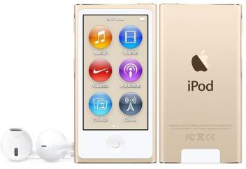

Apple
Apple Inc. ya da eski adıyla Apple Computer, Inc., merkezi Cupertino'da [5] bulunan; tüketici elektroniği, bilgisayar yazılımı ve kişisel
bilgisayar tasarlayan, geliştiren ve satan Amerikan çok uluslu şirkettir. En bilinen donanım ürünleri Mac serisi bilgisayarlar, iPod müzik
çalar, iPhone akıllı telefon, iPad tablet bilgisayar ve Apple Watch adlı akıllı saattir. Yazılımları arasında ise OS X ve iOS işletim
sistemleri, iTunes medya tarayıcısı, Safari internet tarayıcısı ile iLife ve iWork paketleri yer almaktadır. Şirket 1 Nisan 1976 yılında
kurulmuş ve 3 Ocak 1977’de Apple Computer, Inc. adıyla anonim şirket haline gelmiştir.[6] İsminde yer alan "Computer" (Bilgisayar)
kelimesi 9 Ocak 2007'de iPhone tanıtımıyla birlikte tüketici elektroniğine yönelimlerini yansıtması amacıyla kaldırılmıştır.
iPhone
iPhone, Apple tarafından tasarlanan ve üretilen multimedya ve internet özelliklerini destekleyen akıllı telefondur. İlk modeli 29 Haziran
2007'de tanıtılmıştır.
iPhone'da dahili kamera, yazılı mesajlaşma ve görsel sesli mesajlar, taşınabilir medya çalar, Safari internet tarayıcısı, e-posta ve
kablosuz internet özellikleri bulunmaktadır. Kullanıcı arayüzü çoklu dokunmatik ekrana uygun olarak fiziksel klavye yerine sanal klavye
özelliği ile birlikte oluşturulmuştur. 3. parti yazılım desteği de bulunduran iPhone, 2008'in ortalarında faaliyete geçen App Store
sayesinde 1.3 milyondan fazla Apple tarafından onaylanmış uygulamayı desteklemektedir.[3] Bu uygulamalar App Store içinde yirmi
farklı türe ayrılarak listelenmektedir.


"bas buna"
iPod
iPod taşınabilir medya çalar üreten Apple'ın tescilli markasıdır. Apple tarafından tasarlanıp üretilmektedir. İlk iPod 10 Ekim 2001'de
piyasaya sürülmüştür. iPod'un şu anda harddisk kullananılan iPod Classic, dokunmatik ekranlı iPod Touch, video oynatabilen iPod Nano
ve en küçük iPod olan iPod Shuffle modeli bulunmaktadır. Artık üretilmeyen modeller ise iPod Mini ve iPod Photo (iPod Classic olarak
geliştirilmiştir)'dur. 2004 yılında arka tarafında HP logosu bulunan ve Hewlett-Packard aracılığıyla dağıtılan bir Apple iPod 4G modeli
olan iPod+HP de tanıtılmıştır. iPod Classic verileri harddiske kaydederken diğer iPodlar flash belleğe kaydetmektedir. Bu özellik de flash
bellek kullanan iPod'ları daha küçük boyutlu yapmıştır. Bellek boyutları modellere göre değişiklik göstermektedir.

"buna da bas"
iPad
iPad, Apple şirketi tarafından tasarlanan, geliştirilen iOS işletim sistemli bir tablet bilgisayardır. İlk
iPad modeli olan iPad (1.nesil) modeli 3 Nisan 2010 tarihinde tanıtıldı. En son iPad modelleri, iPad Air 2 ve iPad Mini 3, 16 Ekim
2014 tarihinde tanıtılmış ve tarihinde satışa sunulmuştur. Kullanıcı arayüzü multi-touch ekran üzerine sanal klavye ile kurulmuştur.
iPad Wi-Fi ve Wi-Fi ile birlikte hücresel bağlantı da içeren iki farklı türde üretilmektedir. iPad, üretildiği günden günümüze kadar 200
milyon adet satmıştır.
"buna da"
MacBook
MacBook, Apple’ın ürettiği giriş seviyesi dizüstü bilgisayarların yeni serisine verilen addır. 16 Mayıs 2006’da piyasaya sürülmüştür. Bir önceki
seri olan iBook’un yerini almıştır. Fiyat/Verim açısından tüketiciyi gayet memnun edecek şekilde tasarlanmıştır.
MB Intel Core 2 Duo işlemcili üç model ile satılmaktadır. Böylece Apple dizüstü modellerinin Intel'e geçişini tamamlamış olmaktadır. 1.83 ve
2.0 GHz işlemcili parlak beyaz modeli ve 2.0 GHz işlemcili mat siyah modeli vardır. Tüm MB’ler dahili iSight kamera, MagSafe (manyetik
kilitli) güç girişi, uzaktan kumanda ve yeni tasarım ergonomik klavyeye sahiptir. MacBook'un üst seviye dizüstü modeli MacBook Pro'dur.
"buna da"
iMac
Macintosh, kısaca Mac olarak bilinen ve adını Macintosh Apple türünden alan, kişisel bilgisayar üreten Apple Computer Inc.'in
bir ürünüdür. Ürün yelpazesi 1984 yılında başlamış ve piyasada fare ve grafik arayüz kullanan ilk başarılı bilgisayar serilerinden
biri olmuştur. Bu başarıdan dolayı, 1986 yılından itibaren şirketin Lisa, Apple II, Apple III gibi yelpazeleri sonlandırılıp tüm
bilgisayarları Macintosh serisi altında toplanmıştır.
PowerPC mimarisini kullandığı 1994-2005 yılları arasında x86 sınıfı bilgisayarlardan ayrılan en önemli özelliği RISC (Reduced
Instruction Set Computer) mimarisiydi.
"buna da"
Burda videolar da var!
"1.kanal"
"2.kanal"
AppleCard
Apple Card, Goldman Sachs tarafından geliştirilen ve öncelikle iPhone, iPad, Apple Watch veya Mac gibi Apple cihazlarında Apple Pay
ile birlikte kullanılmak üzere tasarlanmış bir kredi kartıdır. [1] [2] 6 Ağustos 2019'da, erken bir önizlemeye davetler, Apple Card'ın
resmi lansmanından önce önceden e-posta bildirimleri için kaydolmuş rastgele seçilen kullanıcılara gönderilmeye başladı.
[3] 20 Ağustos 2019'da Amerika Birleşik Devletleri'nde satisa cikarildi. [4] (Ek kart sahipleri ve ortak hesaplar desteklenmez.)
[5]Apple Card, 25 Mart 2019 tarihinde bir Apple Özel Etkinliğinde duyuruldu. Daha önce donanımı duyurmak için bir platform olarak
hizmet veren önceki özel etkinliklerin aksine, bu etkinlik yeni internet yazılımı ve hizmetlerine odaklandı. Etkinlikte açıklanan diğer hizmetler arasında Apple TV +,
Apple News + ve Apple Arcade yer alıyor.
"buna da"
BITEEEEEEEEEEEEEEEEEEEEEEEEEEEEEEEEEEEEEEEEEEEEEEEEEEEEEEEEEEEEEEEEEEEEEEEEEEEEEEEEEEEEEEEEEEEEEEEEEEEEEEEEEEEEEEEEEEEEEEEE
Tuna tarafindan yapildi
12/10/2019 tarihinde yapildi
saati niye soyleyeyim?
Plainrock124'a tessekurler